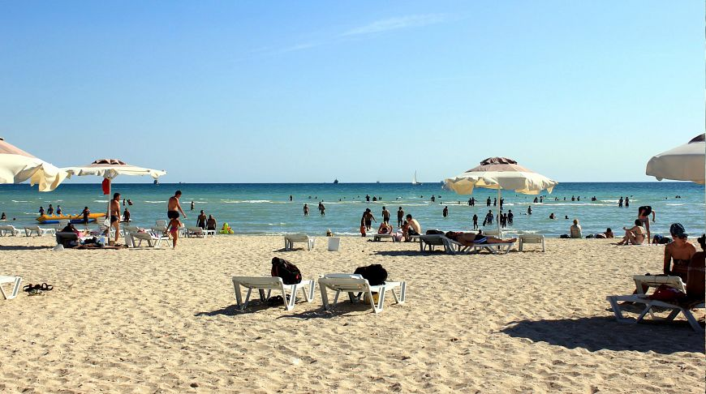
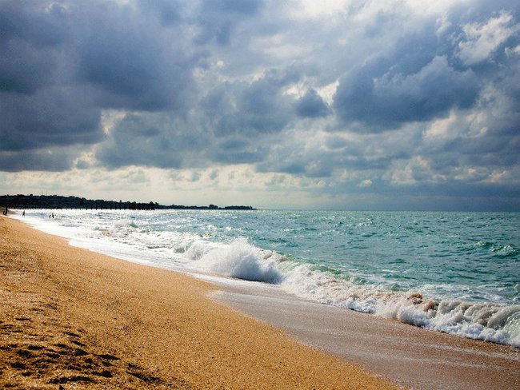

The Caspian Sea – The Pearl of Western Kazakhstan
The Caspian Sea is the largest enclosed body of water on the planet, bordered by Kazakhstan, Russia, Azerbaijan, Iran, and Turkmenistan. For Aktau, it is not only a leisure destination but also a key element of the region's culture and economy.
- Area: about 371,000 km²
- Coastline in Kazakhstan: over 2,000 km
- Depth: up to 1,025 m
- Summer Temperature: +22…+26°C
What can you do?
- 🏖 Beach relaxation along the shore
- 🚤 Boat rides and fishing
- 📸 Sunset views and cliffside photography
How to get there?
📍 City of Aktau, Caspian Sea coast
✈ Direct flights from Astana and Almaty
🚗 Easily accessible by car from the city center
Useful Information
⛱ Best visiting period: May – September
💧 The water is salty but less than ocean water
🧼 The coastline is equipped with recreation areas
The Caspian Sea is where the steppe meets the endless sea, offering a truly unique experience!
PHOTOS


